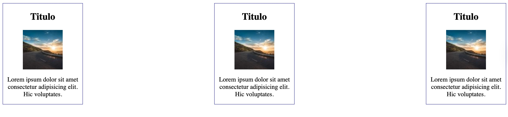
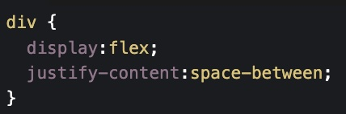

Práctica 1:
Crear página en cuenta personal con sus pasatiempos.
Fecha commits: 28 al 30 de enero.
Links:
Crear página en cuenta personal con sus pasatiempos.
Fecha commits: 28 al 30 de enero.
Links:
Crear página pasatiempos utilizando diferentes archivos html. Mínimo 4 páginas.
El sitio debe contener una barra de navegación hacia cada uno de los archivos
Fecha commits: 4 al 6 de febrero.
Links:
Crear un nuevo repositorio en su cuenta personal de Github. Este repositorio contendrá las páginas de sus pasatiempos realizados en la práctica 2.
Puede copiar el código de su práctica 2 y solo modificar su contenido haciendo uso de las siguientes etiquetas:
Fecha commits: 9 al 11 de febrero.
Links:
En la organización FDW52EJ2026 se encuentra un repositorio con el nombre Website52. Clonar el repositorio a su computadora.
Se solicita crear una carpeta que tenga el mismo nombre que su usuario de github y crear un archivo llamado index.html
El archivo index será su página personal. Modifique el archivo index.html (personal) de tal manera que coloque los links a cada una de sus prácticas realizadas.
Además se debe modificar el index.html donde aparecen todos los integrantes de la organización. En la etiqueta "a" que le corresponda coloque la referencia hacia su página personal.
Fecha commits: 11 al 14 de febrero.
Links:
Modificar su link en la página del grupo. Quitar nombre completo y poner en su lugar su usuario de Github
Fecha commits: 11 al 14 de febrero.
Links:
Tomando como base su página personal de pasatiempos de la práctica 3, copiar todos los archivos a su carpeta que tiene dentro de la organización.
Para una mejor organización de sus archivos puede crear una nueva subcarpeta.
En los archivos que se copiaron a la organización, se solicita agregar por lo menos una vez cada etiqueta vista en clase. Las etiquetas se encuentran en las páginas: 26,27,29,30 del material de clase.
En la página 34 se muestran los controles que puede utilizar para un formulario.
Fecha commits: 18 al 20 de febrero.
Links:
Crear una página web en la que se muestre el uso de todas las propiedades de Flexbox.
Los elementos flexibles deben contener información relacionada a su página de pasatiempos. Se solicita combinar información, es decir, utilizar en sus ejemplos informacíon sobre sus canciones favoritas, videojuegos, comida, etc. Usar toda la información contenida en sus pasatiempos.


Nota: En el titulo se pondrá el nombre del cantante, una imagen y un pequeño párrafo de texto.
Fecha commits: 25 al 31 de marzo.
Links: